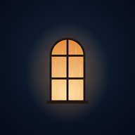

Hora Mansa
Lugares imaginados, sons para desacelerar.
Hora Mansa é um canal no YouTube de paisagens sonoras para dormir, relaxar e estudar: a chuva na janela de uma cobertura em São Paulo de madrugada, a lareira de um chalé na Serra Gaúcha, e muitos outros lugares imaginados. Cada episódio tem de 2 a 3 horas, sem música e sem vozes.
Assista no YouTubeAs cenas são criadas com inteligência artificial, e a ambientação sonora é original, montada a partir de sons gerados. Os lugares são imaginados; não se trata de gravações ao vivo nem de filmagens no local.